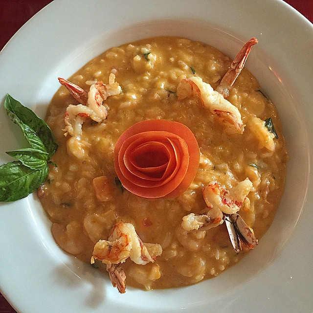

Moony
É um risoto de camarão com tomate, alho poró e especiarias. Serve apenas uma pessoa. R$61,00
É um risoto de camarão com tomate, alho poró e especiarias. Serve apenas uma pessoa. R$61,00

Batatas Bravas servidas com chutney de tomate e aioli R$45,00
Feijão preto, carne e partes de porco, paio e linguiça portuguesa. R$20,00
Bife de Figado temperado com cebola, batatas fritas e acompanhado de arroz a grega. R$55,00
Linguiça portuguesa, bife na chapa, frango assado e batatas fritas. R$19,00

O Dim Sum é basicamente um combo de petiscos, incluindo vegetais, frango frito, spring rolls e pasteizinhos. R$10,00
Comida Japonesa vulgo peixe cru. R$15,00
É um tradicional guisado de carne francês temperado com ervas aromáticas.R$30,00

Uma guloseima único, o ackee eo pescado é um prato jamaicano feita a partir de ackee e peixe salgado. R$25,00
É um prato típico da cozinha coreana, feito de carne marinada grelhada em molho de soja, alho picado e semente de gergelim, e servido com verduras . R$67,00
Feito de musculo, acem ou patinho, cebola grande cortada em cubos, alho amassado, molho de tomate, páprica picante, vinho tinto seco, água, sal e pimenta do reino a gosto. R$80,00

Bem parecido com o bife empanado, o prato mais tradicional da Áustria é preparado com os melhores ingredientes e servido fresco. R$95,00

O nome é uma homenagem ao município onde foi criado, há muitos anos atrás, com o objetivo de garantir sustância ao prato principal daqueles que não tinham condições de comprar muita carne. R$30,00

O Irish Stew ou simplesmente guisado irlandês é um caldo grosso de carne de carneiro cozido com cebola, batata e salsa. R$45,00
Muito requisitado por turistas que querem provar o melhor da culinária argentina,o Locro é um prato típico de outros países latinos, como Peru e Equador. R$99,00
Batata frita, queijo e molho: é disso que consiste o Poutine, um dos pratos mais típicos do Canadá – em especial, na província de Québec. R$28,00

Nas receitas antigas, mais de cem ingredientes e diferentes versões e jeitinhos únicos de prepará-la. Uma das receitas mexicanas mais tradicionais e complexas de se fazer. R$62,00

A clássica sopa de peixe tailandesa recebe o nome de Tom Yum. Ácido e bastante picante, o caldo é feito com um peixe conhecido como “cabeça-de-cobra”, bastante utilizado na gastronomia asiática. R$40,00

É feito com arroz branco cozido em leite de coco acompanhado por um molho especial de pimenta, anchovas, camarões ou carne bovina, amendoim e ovos cozidos. R$65,00
Carne moída cozida com temperos adocicados e coberta por uma mistura de ovos e leite. Este é o Bobotie, um dos pratos mais conhecidos e consumidos na África do Sul. R$49,00